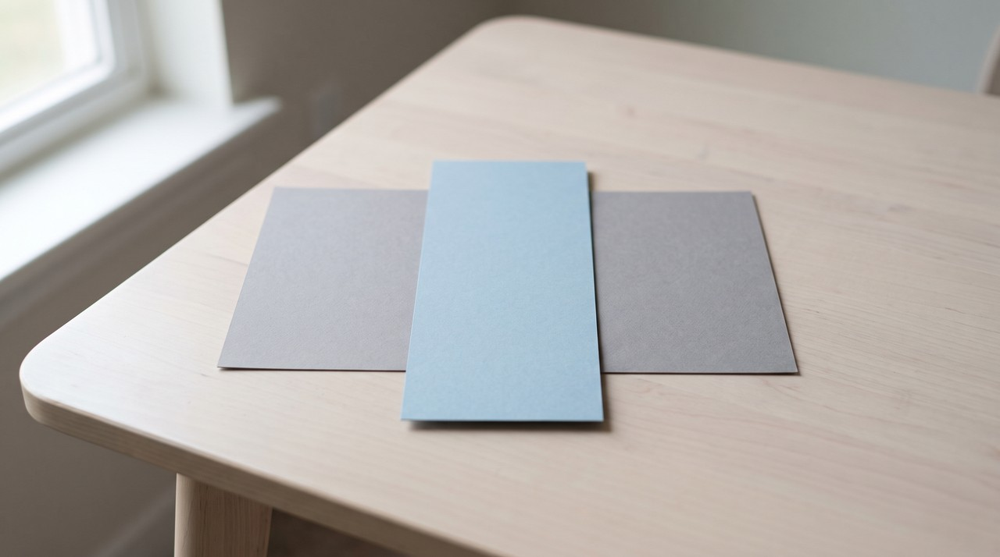
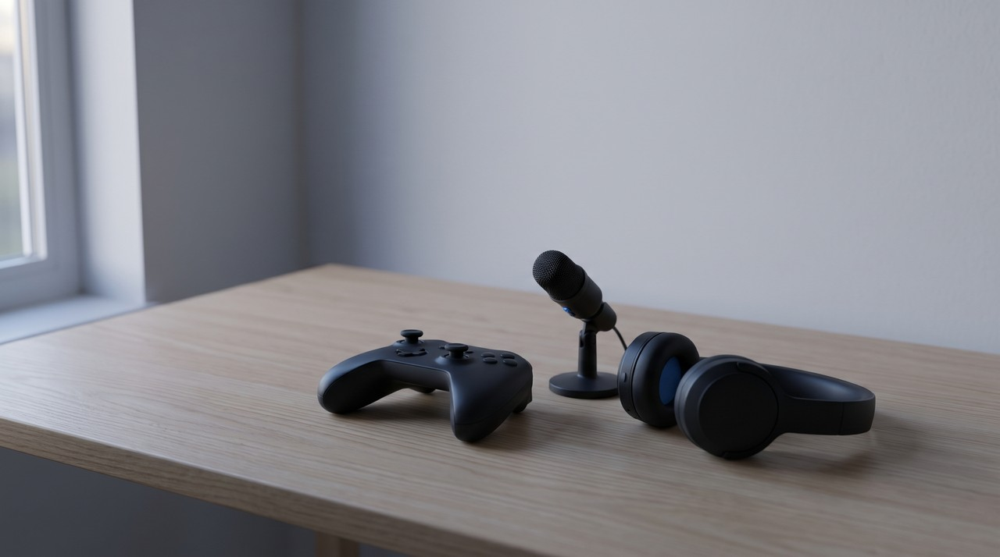

How to make GTA 6 shorts from one long video you are allowed to use
Start with one long video you have the right to use: your own GTA 6 recording, or a streamer's video where you have written permission to make clips. Drop it into the Video to shorts tab in VideoDoc, pick from the good parts it finds, check each clip on the phone preview, and export vertical 1080x1920 videos with word by word captions. Before you upload anything, record and add your own commentary.
GTA 6 launches on 19 November 2026 on PlayStation 5 and Xbox Series X|S, and starting that night many players will end up with recordings that run two or three hours. Since a short has to stay under three minutes, the hard work is finding the few exciting minutes inside that long file, turning a wide screen into a tall phone screen, and adding captions. Most people still do all of those steps manually inside a video editor.
I put this page together to show you a quicker way to handle that cutting right on your own computer. Before you even open a tool, you have to check whose video you are cutting, because that decides what you are allowed to do with the finished shorts. Cut only footage you have the right to use, and add your own commentary before you post.
I am not giving legal or financial advice here. GTA 6 and all its footage belong to Take-Two and Rockstar Games, and my site has no connection to them. Rockstar can take down footage whenever they choose, most people make very little money from clipping when they start out, and having a streamer's permission does not automatically make your clips eligible for YouTube ads.
Whose GTA 6 video are you allowed to cut into shorts?
When you sit down to cut a long GTA 6 video, there are really only two safe sources to use. The first is your own gameplay recording made on your own console from 19 November 2026 onwards. The second is a streamer's video, provided they have given you written permission to clip it, such as an email, a direct message, or a public clip policy on their channel, because a quick remark in live chat is weak proof.
| The footage | Should you clip it? | Can the shorts earn YouTube ads? |
|---|---|---|
| Your own recording, with your own commentary | Yes, inside Rockstar's posting rules | This is the kind YouTube's rule favours. Rockstar's written policy still gives no permission to earn |
| A streamer's video, with written clip permission | Yes. The streamer can allow their face, voice and commentary, but cannot license the game footage | Not from permission alone. YouTube's reused content rule still applies |
| Rockstar's own trailers | Do not clip them for a channel that earns | No |
| Leaked or early footage | Never | No, and Rockstar takes it down |
The second row of that table often catches people off guard. YouTube's channel monetization policies page includes a rule for reused content, which covers videos made from footage someone else recorded. The page states: "This policy applies even if you have permission from the original creator." Getting permission clears up the copyright side between you and the streamer, but it does nothing for ad eligibility.
On that same policy page, YouTube explains that reused footage is allowed when viewers see a meaningful difference between the original video and yours, giving examples like a critical review or edited clips with your own storyline or voice commentary. Adding captions only changes how the video looks on screen, so captions by themselves do not count. Permission solves copyright, not ad eligibility. A clip needs your own commentary or story.
Rockstar also has its own rules that sit completely separate from YouTube's policies. Their policy on posting copyrighted Rockstar Games material applies to non-commercial fan use, meaning you do not make money through the footage or use it to promote a product or service. The policy specifically says they remove leaked footage, game endings, and standalone cutscenes, which is why I have not put a single GTA 6 picture on this page.
How do you cut one long video into GTA 6 shorts?
In November 2026, I built a second tab into VideoDoc called Video to shorts specifically to handle this kind of cutting. It runs locally on Windows and Apple Silicon Macs, so your video stays on your own computer and never gets uploaded to a server. Here is the exact order of steps to follow when you use it.
- Open the Video to shorts tab and add your long video. You can drop the file in, paste its file path, or paste a public link. Pasting the path makes no copy of the file, which is the better choice for a big recording.
- Press Make shorts. VideoDoc listens to the video and notes the time of every word, finds every scene cut and the faces, and measures how loud each moment is.
- Look at the best parts it suggests. They come in four lengths, from up to 30 seconds to 2 to 3 minutes, and each one carries 1 to 5 dots and a plain reason, such as it starts with a question or the voice is lively.
- Play each part on the phone preview in the middle. It shows the short as it will look, captions included, so you judge the clip before you export anything.
- Trim on the timeline by dragging the thick handles. The edges snap to whole words, so no word is cut in half, and you can join several parts into one short.
- Pick how the tall frame is filled. For gameplay with a webcam, the facecam goes on top and the whole game picture sits below. You can also follow the face, show the whole picture, or drag your own frame.
- Leave the word by word captions on, or pick another of the three styles. Then export vertical 9:16 at 1080x1920, one short at a time or several together.

Game recordings have one quirk that matters here. Much of a gameplay session has little or no talking, so an app that only listens for speech would find nothing there. For quiet sections, VideoDoc looks at sound spikes and scene cuts instead, and I also programmed every suggested clip to begin right at the start of a sentence so viewers do not swipe away from a clip that starts mid-thought.
The final step is up to you, and no software can automate it. You need to record your commentary while playing or lay your voice down in an editor after exporting, giving every short something that belongs only to you. That extra layer is what YouTube's rule asks for, and it keeps your clip from looking identical to a hundred other uploads of the exact same scene.

What does the free version of VideoDoc allow?
If you run VideoDoc without a Pro key, you are using the Lite mode, which cuts shorts from videos up to 20 minutes long and places a small "Made with VideoDoc" mark on each export. You still get captions, face follow, and your own frame in Lite, so you can test the full workflow on a short recording before spending anything.
A 3 hour launch stream goes well over that 20 minute cap, leaving you with two practical options. You can trim the stream down to a chunk under 20 minutes in any basic editor first and feed that smaller file into Lite. Or you can upgrade to Pro, which removes both the time limit and the mark for a one time payment, with all the plans listed on the home page.
The very first time you open the feature, VideoDoc downloads its speech engine onto your computer once. That download is 486 MB, which takes around 3 minutes on an average home connection, and the app displays the file size and remaining time while you wait.
What is the free way to make shorts, and where does it stop?
You do not have to use my tool to make shorts, and if you only need one or two clips, doing it for free makes complete sense. A free app like CapCut on your phone or computer can crop wide gameplay into a vertical frame and generate automatic captions, though which caption tools stay free changes often so check what your version includes. YouTube's mobile app also lets you pull a Short directly from a long video already uploaded to your own channel.
Where the free route falls short is finding the clips in the first place. Nothing flags the good parts for you, so you end up scrubbing through the entire file by hand, which eats up most of an evening on a 3 hour video, while also setting the crop manually for every clip and making your phone handle a massive file. If you already know the three exact moments you want, stick with the free tools, but if you are sifting through hours of footage, having a tool spot the likely parts saves real time.
VideoDoc has no understanding of the game itself. It detects moments using speech, sound, faces, and scene cuts, so it cannot tell if a play is rare or funny, meaning you still have to watch every clip it suggests. It will not record your voice, write your commentary, or upload videos for you. Any link you paste has to be public, so a private video must be a file on your computer. Shorts export only on Windows and Apple Silicon Macs, and no software can promise views or stop Rockstar from removing footage.
Should you find the moments first, or let the tool pick?
Both approaches get the job done, and each fits a different kind of recording. When you have your own video under 20 minutes, let the tab scan it and start reviewing from its top picks. When you are dealing with a very long stream, reading the text first usually works better, and my page on finding the clip moments in a long GTA 6 stream explains how to search a transcript for the exact seconds a streamer reacts so you only cut around those timestamps.
If your gameplay session works better as a written walkthrough than a batch of clips, you can turn that exact same video into a written guide instead. I covered that process in turning your own gameplay video into a GTA 6 guide, which fits YouTube's wording on instructive commentary.
Try it on a recording that is yours.
Lite makes shorts from videos up to 20 minutes. Pro is a one time payment with no length limit. See how the Video to shorts tab works.
GTA 6 week: the Pro button below adds code GTA6, which takes 50% off for the first 100 buyers.
Quick questions
Can I make GTA 6 shorts from Rockstar's trailers?
Do not cut up the trailers if you are running a channel to earn money. Rockstar's posting policy only covers non-commercial fan use, and chopping a trailer into shorts without adding anything original falls right under YouTube's reused content rule, so stick to your own gameplay recorded from 19 November 2026 onwards.
Will YouTube pay for shorts cut from a streamer's GTA 6 video if I have permission?
Having permission by itself is not enough to earn ad money. YouTube states that its reused content rule still applies even when the original creator gives permission, so you have to add a meaningful difference like your own story or voice commentary rather than relying on captions alone.
How long a video can the free version of VideoDoc cut into shorts?
Lite handles videos up to 20 minutes long and adds a small "Made with VideoDoc" mark to each finished clip. If you want to process a longer file like a 3 hour stream, you either need Pro or you have to trim the video into a piece under 20 minutes first.
Grab the longest recording you have permission to use, trim a section under 20 minutes, and generate your first three shorts tonight. Once they export, record at least one sentence of your own commentary over each clip before you hit publish.

I am a telecom engineer and business analyst from Pakistan, and I build small honest desktop tools under Designesh. I made VideoDoc because I wanted my AI to read the lectures I study from. Everything here is tested on my own machine first.